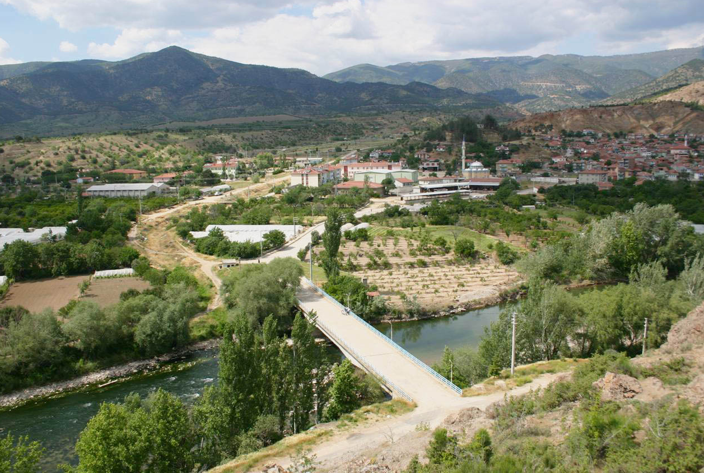
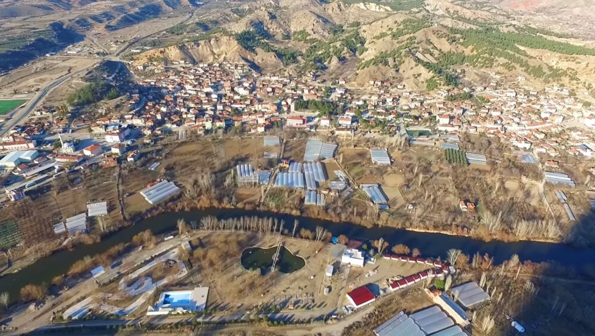

SARICAKAYA
Sarıcakaya, Eskişehir ilinin bir ilçesidir.
Osmanlı döneminde İzmit Sancağının Göynük kazasına bağlı iken, daha sonra 1884 yılında Söğüt’e bağlanmıştır.
Cumhuriyet döneminde 1944'te Eskişehir merkez ilçesine bağlanmış,
1958 yılında Eskişehir’e bağlı bir ilçe merkezi olmuştur.
1990'da Mihalgazi'nin ayrılmasıyla bugünkü sınırlarına ulaşmıştır.
Sakarya nehri kenarına kurulu ilçenin il merkezine uzaklığı 47 km'dir.
Sarıcakaya ilçesinin kuzeybatısında Yenipazar, kuzeyinde Göynük,
doğusunda Nallıhan, batısında Mihalgazi ve İnhisar, Güneyinde ise Alpu ve merkez ilçe vardır.
Deniz seviyesinden yüksekliği 220 m olan ilçe, İç Anadolu Bölgesinden farklı olarak "mikroklima"
iklim sistemine sahiptir ve Karadeniz Bölgesinde kalır. Bu açıdan Akdeniz iklim özelliklerini andırır.
Yaklaşık 5.700 nüfusa sahip ilçenin ekonomisi tarıma dayalıdır. Sebze ve meyve yetiştiriciliği oldukça gelişmiştir.
İlçe arazisinin %50 si ormanlarla kaplıdır
İlçe mermer yönünden zengindir. Ancak mevcut mermer ocakları ekonomik olmaması nedeniyle işletilmemektedir.
Sarıcakaya ilçesine bağlı 8 köy ve 1 belde bulunmakta iken, 31.03.2014 tarihinde yürürlüğe giren
6360 sayılı yasa ile bu yerleşim yerlerinin tamamı mahalle statüsüne dönüştürülmüş olup, halihazırda
5'i ilçe merkezinde olmakla birlikte toplam 14 mahallesi bulunmaktadır.


SeyitGazi İlçesi Hakkında Bilgi Almak İstiyorsanız TIKLAYINIZ
Anasayfaya Dönmek için Tıklayınız.